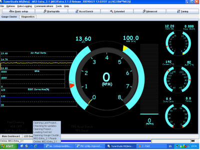

<html>
<head>
<title>ExtraEFI.co.uk -Tuner Studio Setup</title><script type="text/javascript">

  var _gaq = _gaq || [];
  _gaq.push(['_setAccount', 'UA-29880327-1']);
  _gaq.push(['_trackPageview']);

  (function() {
    var ga = document.createElement('script'); ga.type = 'text/javascript'; ga.async = true;
    ga.src = ('https:' == document.location.protocol ? 'https://ssl' : 'http://www') + '.google-analytics.com/ga.js';
    var s = document.getElementsByTagName('script')[0]; s.parentNode.insertBefore(ga, s);
  })();

</script>
<meta http-equiv="Content-Type" content="text/html; charset=iso-8859-1">
</head>
</html>
l
<html>
<head>
<script src="SpryAssets/SpryMenuBar.js" type="text/javascript"></script>
<link href="SpryAssets/SpryMenuBarHorizontal.css" rel="stylesheet" type="text/css">
<link href="SpryAssets/SpryMenuBarVertical.css" rel="stylesheet" type="text/css">
<link rel="stylesheet" type="text/css" href="Main.css" />
<style type="text/css">
<!--
.style21 {
	color: #CCFF33;
	font-style: italic;
}
.style22 {
	color: #FFFF00;
	font-weight: bold;
}
-->
</style>
</head>

<!--COPY FROM HERE-->
<body bgcolor="#fff" text="#000" background="Pix/backing.jpg" link="#000" vlink="#333" alink="#ccc">
e using 

<div id="page-wrapper">
    
    <table width="100%" bgcolor="#000">
        <tr>
            <td><class="style10"><a href="http://extraefi.co.uk"></a></td>
        </tr>
  </table>
  
    <table bgcolor="#fff" id="MenuBarHorizontal">
        <tr>
            <td bgcolor="#eee"><ul type="circle" class="MenuBarHorizontal style28" id="MenuBar1">
                <li name="lbNavDisplay">
                    <div align="center"><a class="MenuBarItemSubmenu" href="#">Products</a>
              <ul>
                <li>
                  <div align="center"><a href="MS_All_products.htm" class="MenuBarItemSubmenu">Engine Management</a>
                      <ul>
                        <li>
                          <div align="center"><a href="MS_All_products.htm">MegaSquirt ECU's</a></div>
                        </li>
                        <li>
                          <div align="center"><a href="RV8_Kits.html#pnp">RV8 Plug-n-Play</a></div>
                        </li>
                        <li><a href="RV8_Kits.html">V8 Bundles</a></li>
                      </ul>
                  </div>
                </li>
                <li>
                  <div align="center"><a href="Misc_products.htm" class="MenuBarItemSubmenu">Accessories</a>
                      <ul>
                        <li>
                          <div align="center"><a href="Misc_products.htm">Knock Conditioners, Temp Sensors, Relays, Connectors, Trigger Wheels, Looms and much more</a></div>
                        </li>
                      </ul>
                  </div>
                </li>
                <li>
                  <div align="center"><a href="#" class="MenuBarItemSubmenu">ECU Bundles</a>
                      <ul>
                        <li>
                          <div align="center"><a href="RV8_Kits.html">8 Cylinder Engines</a></div>
                        </li>
                        <li>
                          <div align="center"><a href="RV8_Kits.html#pnp">RV8 Plug-n-Play</a></div>
                        </li>
                      </ul>
                  </div>
                </li>
                <li>
                  <div align="center"><a href="RV8_Kits.html#pnp">Rover V8 ECU's</a></div>
                </li>
                <li><a href="MX5.html">Mazda MX5 ECU's</a></li>
              </ul>
          </div>
        </li>
        <li>
          <div align="center"><a href="#" class="MenuBarItemSubmenu">Support</a>
              <ul>
                <li>
                  <div align="center"><a href="support.htm">Help &amp; Support Files</a></div>
                </li>
                <li>
                  <div align="center"><a href="drawings.htm">Drawings &amp; Diagrams</a></div>
                </li>
                <li>
                  <div align="center"><a href="downloads.htm">Download Area</a></div>
                </li>
                <li>
                  <div align="center"><a href="video.html">Video Help</a></div>
                </li>
              </ul>
          </div>
        </li>
        <li>
          <div align="center"><a href="#" class="MenuBarItemSubmenu">FAQ's</a>
              <ul>
                <li>
                  <div align="center"><a href="faq.htm">FAQ's</a></div>
                </li>
                <li>
                  <div align="center"><a href="glossary.htm">Glossary of MegaSquirt Terms</a></div>
                </li>
                <li><a href="Untitled Item">Compare ECU's</a></li>
                <li><a href="information_OL.htm">Still Confused?</a></li>
                <li>
                  <div align="center"><a href="terms.htm#Warranty">ExtraEFI Warranty</a></div>
                </li>
                <li>
                  <div align="center"><a href="terms.htm">Terms of Use for ExtraEFI website</a></div>
                </li>
                <li>
                  <div align="center"><a href="history.htm">ExtraEFI Company Profile</a></div>
                </li>
              </ul>
          </div>
        </li>
        <li>
          <div align="center"><a href="#" class="MenuBarItemSubmenu">Services</a>
              <ul>
                <li> <a href="services.htm">Fitting &amp; Tuning</a></li>
                <li>
                  <div align="center"><a href="services.htm">MegaSquirt Upgrades</a></div>
                </li>
              </ul>
          </div>
        </li>
        <li>
          <div align="center"><a href="#" class="MenuBarItemSubmenu">New Stuff</a>
            <ul>
              <li><a href="MX5.html">MX5 PnP ECU's</a></li>
              <li><a href="Misc_products.htm">Knock Conditioners</a></li>
              <li><a href="Misc_products.htm#usbadap">Built-in USB Port</a></li>
            </ul>
            </div>
        </li>
        <li>
          <div align="center"><a href="gallery.htm">Gallery</a> </div>
        </li>
        <li>
          <div align="center"><a href="feedback.html">Feedback</a></div>
        </li>
        <li>
          <div align="center"><a href="cobra/index.htm">Cobra Replica</a></div>
        </li>
        <li>
          <div align="center"><a href="gallery.htm#links">Links</a></div>
        </li>
      </ul></td>
    </tr>
  </table>

<div id="email-border">
  <p style="font-size: 24px;">Click <a href="mailto:phil@extraefi.co.uk">here</a> to email me if you have any questions</p>
</div>
<!--STOP COPYING HERE-->

<h1>
  Tuner Studio Setup</h1>
  </div>
<div align="center"><blockquote>
<div style="font-size:16px;">
    <table width="100%" bgcolor="#FFFFFF">
      <!-- InstanceBeginEditable name="EditRegion3" -->
      <tr>
        <td width="100%" height="939" bgcolor="#666666"><div align="center">
    <p align="left"><font color="#000000">If you haven't already done so, install <strong>Tuner Studio</strong> onto your laptop, downloadable from <a href="http://tunerstudio.com/index.php/downloads"><strong>here</strong></a> this is also on the CD I provide, but that may need updating, which is done automatically. This is the latest tuning software for MegaSquirt products and has a LOT of features that MegaTune (MT) doesn't have. It is similar in layout and function to MT, so that MT users can adapt to it easily.</font></p>
    <p align="left"><font color="#000000">Once the install has finished you will be presented with making a new project:</font></p>
    <p align="left"><font color="#000000"></font></p>
    <p align="left"><font color="#000000">Project name can be what ever you want, I recommend calling it MS1 or MS2, etc, incase you ever upgrade, then you can simply add another project to Tuner Studio and select either one when you want. Alternativley call it by the car, e.g. CobraMS2, etc.</font></p>
    <p align="left"><font color="#000000">Leave the Project Directory as it is, this keeps it as a standard install.</font></p>
    <p align="left"><font color="#000000">ECU Definition is the ECU that it's going to be used on. If you already have the ECU powered up and installed then connect the comms up and select Detect. This will interigate the ECU and select the code from a list in Tuner Studio. If you have the actual ini file for your code (e.g. your using a new code thats in beta) then select the ini location by pressing the <strong>...</strong> button. If your starting for the first time with one of my ECUs then select:<br>
      <br>
        <strong>For an MS1 ECU, select &quot;MS1/Extra Format 029y3&quot;</strong></font></p>
    <p align="left"><font color="#000000"><strong>For an MS2 or an MS3 I would select &quot;Detect&quot;, (with the ECU powered up and connected!) this will search the EFI server for your ECUs ini file using the Internet. <br>
      <br>
      If you dont have the internet or the ECU connected then use the CD provided with the ECU, it will be in &quot;Tuning Software/ms2extra_*.*.*_release/&quot; Then select &quot;OTHER&quot; and press the &quot;,,,&quot; button and chose your ini file from the CD or downloaded directory</strong><br>
    </font></p>
    <p align="left"><strong><font color="#000000">For old MS2 ECU's some of the codes may not be in Tuner Studio. For example, the Release code V3.2.1 has yet to be part of the install of Tuner Studio.  Its available on the<a href="downloads.htm"> Downloads page HERE</a></font></strong><font color="#FFFF00"><em><br>
    </em></font></p>
    <p align="left"><strong><font color="#FFFF00"><em>HISTORY OF CODES USED by ExtraEFI for MS2:<br><br>
      All MS2 ECUs untill Mid 2009 I used V2.0.1<br><br>
      Mid 2009 to Jan 2011 I used V2.1.0.p<br><br>
      Feb 2012 to Jan 2014 I use Release code V3.2.1<br>
      <br>
      Jan 2014 to Nov 2014 Release code V3.3.1a<br>
      <br>
    Dec 2014 to date Release code V3.3.3</em></font></strong></p>
    <p align="left" class="style21">HISTORY OF CODES USED by ExtraEFI for MS3:</p>
    <p align="left" class="style21">July 2012 to Dec 2012 use Release V1.1.1</p>
    <p align="left" class="style21">Dec 2012 to September 2013 use Release V1.2.0</p>
    <p align="left" class="style21">September 2013 to Nov 2014 use Release V1.3.0</p>
    <p align="left" class="style21">Nov 2014 to date use Release V1.3.3</p>
    <p align="left"><font color="#000000">Next you need to select a few options:</font></p>
    <p align="left"></p>
    <p align="left"><font color="#000000">If you have a  Wideband Lambda or a standard narrow band lambda.</font></p>
    <p align="left"><font color="#000000">You can also select Celcius rather than Fareinheit if you wish here. The rest should be left as the defaults. Don't worry, you can change things later.</font></p>
    <p align="left"><font color="#000000"></font></p>
    <p align="left"><font color="#000000">Then you can select the baud rate and com port your using and even test it is working, as long as the ECU is powered up and connected to the laptop. Note that MS2 and MS3 use 115200 Baud rate and MS1 uses 9600</font>.</p>
    <p align="left"></p>
    <p align="left"><font color="#000000">Lastly you can select the style of display you want to use, the default is pretty good to be honest, but you can use what you want, you can even make your own!!</font></p>
    <p align="left"><font color="#000000">Once its all done you can change any settings or add another project (so if you have more than one car running MS) simply by selecting File - Project and select Project properties, etc. You can also select different gauges by right clicking on the screen and selecting a new one.</font></p>
    <p align="center"> </p>
    <p align="center" class="style22">Please Note: Unless your ECU is connected then the Tune File in Tuner Studio will be meaningless! <br>
      It will only load the basic configuration from the ECU once it connects.</p>
    <p align="center"><a href="Drawings/PDF_Files/Tuner_Studio_Setup.pdf" target="_blank">PDF 
      File of this Page</a></p>
      </div></td></tr></table>
      <br>
    <!--Footer-->
    <div id="footer">
    <table width="100%">
      <tr>
        <td height="97" background="Pix/new_title1.jpg"><div align="center"><span style="color: #fff;">Content &copy; 
        <a href="http://www.extraefi.co.uk" style="color: #fff;">ExtraEFI</a>. All Rights Reserved.</span><br>
                  <a href="terms.htm" style="color: #fff;">Terms of Use.</a><br>
                  <span style="color: #fff;">Layout of this website was worked on by</span> <a href="http:chrisbrighton.co.uk" target="_blank" style="color: #fff;">
                  Chris Brighton.</a></span></div></td>
      </tr>
    </table>
    </div>

<script type="text/javascript">
<!--
var MenuBar1 = new Spry.Widget.MenuBar("MenuBar1", {imgRight:"SpryAssets/SpryMenuBarRightHover.gif"});
//-->
</script>
</body>
</html>

